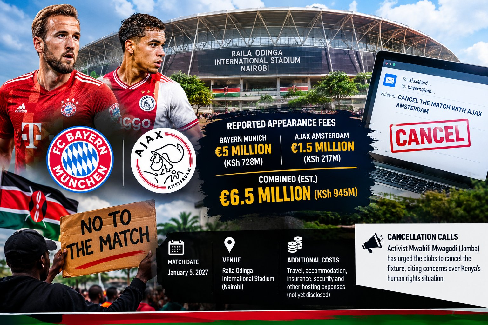

Bayern-Ajax Nairobi Match Faces Cancellation Calls Amid KSh945 Million Fee Reports
Sports
NAIROBI, Kenya — A planned friendly match between Bayern Munich and Ajax Amsterdam in Nairobi has sparked public debate over its reported cost, with Kenyan activists urging the European clubs to reconsider their participation.
The match, scheduled for January 5, 2027, will inaugurate the 60,000-seat Raila Odinga International Stadium at Talanta Sports City.
Bayern Munich is reportedly set to receive €5 million (approximately KSh728 million) for the appearance, according to reports published by Pulse Kenya and The Eastleigh Voice. Ajax's appearance fee is estimated at €1.5 million (approximately KSh217 million) by Mozzart Sport Kenya, although the figure has not been officially confirmed.
The combined reported fees amount to approximately €6.5 million (KSh945 million), excluding travel, accommodation, insurance, security and other hosting expenses. The complete event budget has not been publicly disclosed.
President William Ruto has said the match will be financed through corporate partnerships and a self-sustaining commercial model. Expected revenue sources include sponsorships, ticket sales, advertising and broadcasting rights. However, the specific contributions from sponsors and public funds remain unclear.
The financial questions have fuelled criticism from Kenyans concerned about public spending and the country's economic challenges.
Activist Mwabili Mwagodi, popularly known as Jomba, said he had emailed shareholders associated with Bayern Munich and Ajax, urging them to cancel the fixture over concerns about Kenya's human rights situation. Other Kenyans have also questioned the clubs' involvement.
Neither club had publicly announced a decision to withdraw following the reported campaign.
The fixture remains scheduled for January 5, 2027, as Kenya prepares to co-host the 2027 Africa Cup of Nations with Uganda and Tanzania.